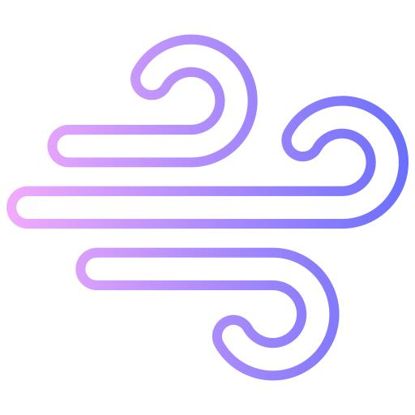

Контроль температуры
Интеллектуальная система измеряет температуру воздуха более 40 раз в секунду и автоматически регулирует нагрев, предотвращая повреждение волос.
Инновационные решения, которые делают Dyson Supersonic™ одним из самых современных фенов в мире.
Интеллектуальная система измеряет температуру воздуха более 40 раз в секунду и автоматически регулирует нагрев, предотвращая повреждение волос.

Компактный цифровой двигатель вращается со скоростью до 110 000 оборотов в минуту, создавая мощный поток воздуха для быстрой сушки.

Технология Air Multiplier™ усиливает поток воздуха, обеспечивая быструю и равномерную сушку волос без использования экстремально высокой температуры.

Все насадки крепятся с помощью магнитов. Они легко вращаются на 360° и быстро заменяются во время укладки.
Постоянный контроль температуры защищает волосы и сохраняет их естественный блеск.

Высокая скорость воздушного потока позволяет сократить время сушки.
Продуманная конструкция предотвращает перегрев устройства даже при длительном использовании.